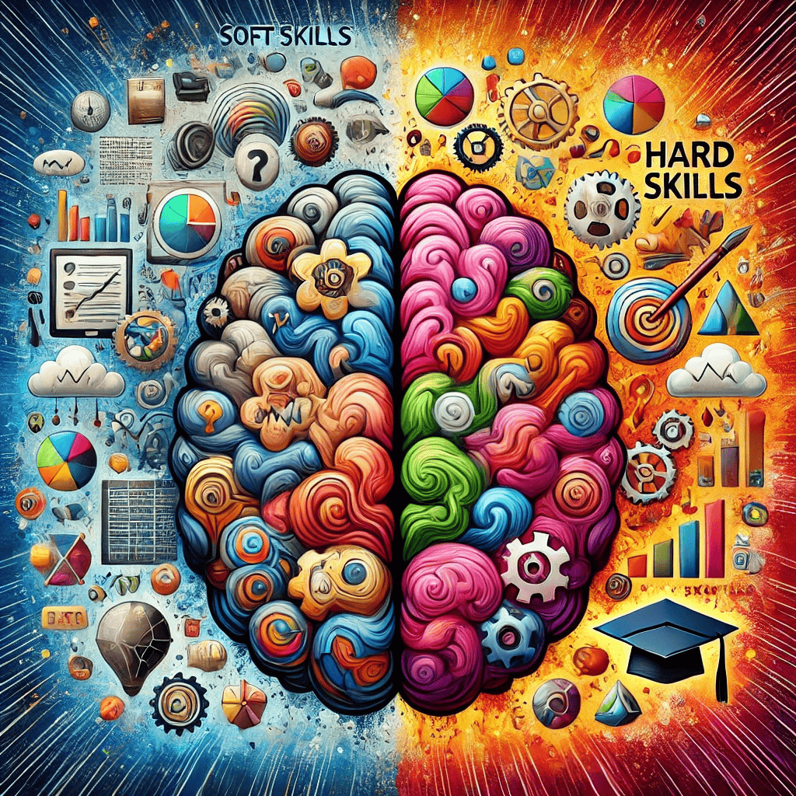
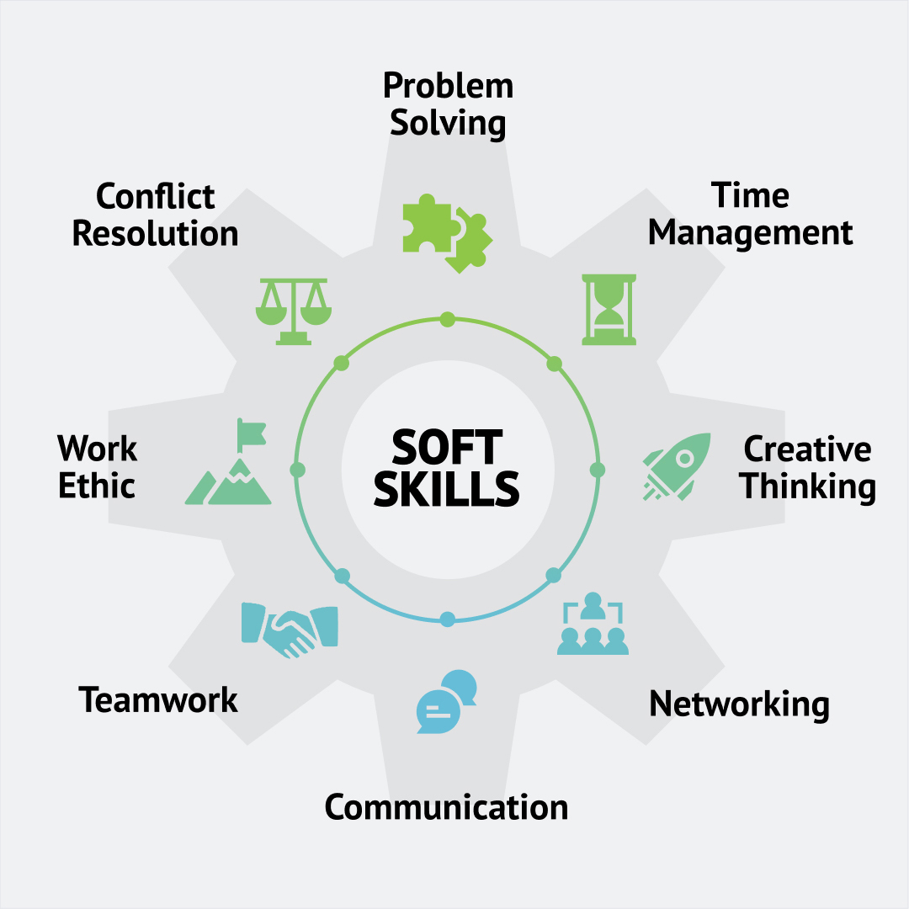

Hard Skills vs. Soft Skills: What’s the Difference?

What’s More Important?
In today’s fast-paced world, skills are everything. But there’s a question many people wrestle with: What’s more important— soft skills or hard skills? Which one helps you
get hired faster, succeed in your career, or make meaningful contributions? Whether you’re a job seeker, a
professional looking to level up, or a business owner aiming to build a strong team, understanding the
difference between soft skills and hard skills can make all the difference.
So, let’s dive in using a simple framework: Problem, Agitation, Solution (PAS). This approach will
help us break down why these skills matter and how you can leverage both for long-term success.
Let’s start with the basics. You’ve probably heard the terms “soft skills” and “hard skills” thrown around a
lot, especially in job interviews, career advice articles, or performance reviews. But what do these terms
really mean?
-
Hard skills are your technical abilities. These are the specific, teachable skills that you
can measure, quantify, and often earn a certification for. Examples include things like coding,
using a specific software, or knowing a foreign language.
-
Soft skills are more about how you interact with other people and manage yourself. They’re
harder to measure, but they include things like communication, emotional intelligence, and
leadership.
Many people often assume that hard skills are the more important part of their career success,
especially in fields like tech, engineering, or finance. After all, if you can’t do the technical work, why
would anyone hire you, right? But as industries evolve and job roles become more dynamic, soft skills are
becoming just as crucial. In fact, a survey by LinkedIn found that 92% of talent professionals and hiring
managers say that soft skills matter as much or more than hard skills when they hire.
So, here’s the problem: Many people overlook soft skills, thinking they’re not as important, or that
they come naturally. The result? They miss out on promotions, fail to collaborate well with teams, or don’t
manage clients effectively.
Agitation: Why Ignoring Soft Skills Hurts Your Career
Technical skills may get you job, Soft skills can make you or break you as a
manager.
Now, let’s talk about why overlooking soft skills is a big mistake — for both individuals and businesses.
1. Hard Skills Have a Shelf Life
Hard skills evolve constantly. Think about it: a few years ago, if you were a software developer, knowing a
language like C++ or Java was critical. Today, Python, Swift, and JavaScript have taken the lead. In fact,
research shows that the average lifespan of a hard skill is just 2-5 years. That means the hard skill you’re
learning today could be obsolete by the time you’re looking for your next job.
Contrast that with soft skills, which don’t have an expiration date. Communication, teamwork,
adaptability, and emotional intelligence are timeless. These skills transfer across industries and roles,
giving you the flexibility to move up in your career no matter how technology or market demands change.
2. Automation Can’t Replace Soft Skills
In an era of AI and automation, many hard skills can — and will — be replaced by technology. Jobs that once
required specialized knowledge are now being done faster and more accurately by machines. According to
McKinsey, about 60% of all occupations have at least 30% of activities that could be automated using
existing technologies.
But here’s the kicker: machines can’t replicate human interaction. A robot might be able to analyze
data or code a website, but it can’t lead a team, resolve conflicts, or inspire innovation. These are the
areas where soft skills shine, and where they’ll continue to matter more as technology advances.
3. People Don’t Quit Jobs, They Quit Managers
Leadership and people management are all about soft skills. A Gallup study found that 50% of employees
have left a job to get away from their manager at some point in their career. Poor communication,
lack of empathy, and inability to provide constructive feedback can all lead to high employee turnover.
For business leaders, this means that having employees with strong technical capabilities isn’t enough. Your
team members also need to know how to work together, how to lead, and how to create a positive environment
where people want to stay.
Solution: Master Both for Maximum Impact
So, if we know that hard skills are necessary but limited, and that soft skills are critical for long-term
success, the real solution lies in mastering both. The best professionals — and the best teams — are those
that can blend the technical know-how with people skills.
Here’s a breakdown of what this looks like in practice:
1. Developing Hard Skills: The Foundation
Hard skills are essential because they prove that you can get the job done. Whether you’re an accountant, an
engineer, or a marketer, the technical aspects of your work are what you get paid for. But these skills need
to be kept up to date.
How to Build and Maintain Hard Skills:
- Ongoing Learning:
Industries evolve, so should your knowledge. Take courses, attend workshops, and stay updated with
industry news. Platforms like Coursera, Udemy, and LinkedIn Learning offer courses on nearly every
technical skill imaginable.
- Certifications:
Certifications aren’t just about proving you know something; they show you’ve put in the work to stay
current. Whether it’s a Google Analytics certificate for marketers or AWS certification for cloud
professionals, these badges matter.
- Practice Makes Perfect:
If you don’t use it, you lose it. Stay hands-on with your hard skills. If you’re a coder, build personal
projects. If you’re a marketer, run experiments with small campaigns.
2. Developing Soft Skills: The Glue That Holds it All Together
While hard skills get your foot in the door, soft skills help you climb the ladder. Employers are
increasingly looking for people who can solve problems, think critically, and work well with others. In
fact, research from the Carnegie Foundation revealed that 85% of job success comes from having
well-developed soft skills.
Key Soft Skills to Develop:

- Communication:
Being able to clearly articulate your ideas and listen to others is key in every field. Whether you’re in
meetings, giving presentations, or writing reports, communication is at the heart of collaboration.
- Emotional Intelligence (EQ):
Understanding your emotions and the emotions of others makes you a better team player and leader. It
helps you resolve conflicts, offer support, and manage stress.
- Teamwork and Collaboration:
In today’s workplace, almost everything is done in teams. Knowing how to collaborate, share ideas, and
work toward a common goal is crucial for success.
- Problem-Solving and Critical Thinking:
Employers want employees who can think on their feet, come up with creative solutions, and make sound
decisions even under pressure.
How to Improve Soft Skills:
- Seek Feedback:
Ask colleagues or managers for honest feedback on your communication, teamwork, or leadership. Then,
actively work to improve.
- Self-Awareness:
Start paying attention to how you react in different situations. Are you quick to judge? Do you take
feedback well? The more self-aware you become, the better you’ll be at managing your interactions with
others.
- Practice Active Listening:
The next time you’re in a conversation, focus entirely on the other person’s words before jumping in with
your response. This builds rapport and shows empathy.
3. The Perfect Combo: Hard and Soft Skills Together
What does it look like when you combine hard skills and soft skills effectively?
Imagine you’re a project manager. Your hard skills include knowing project management software inside out,
understanding timelines, and being able to allocate resources. But the soft skills — like communicating
effectively with your team, managing stakeholder expectations, and resolving conflicts — are what ensure the
project gets done on time and within budget.
Or think about a data scientist. Hard skills like data analysis, coding, and using complex algorithms are
necessary, but being able to explain those insights to non-technical stakeholders requires strong
communication and persuasion skills.
In short, the perfect combination of hard and soft skills isn’t just about knowing what to do; it’s about
knowing how to do it in a way that inspires confidence, trust, and success.
Final Thoughts: The Future of Work
As industries shift and evolve, so do the skills that employers prioritize. But one thing remains constant:
success
requires both hard and soft skills. Hard skills will always matter for getting the job done, but
soft skills are
what will set you apart and help you move up in your career.
Companies today are placing more value on soft skills than ever before. A study by Deloitte predicts that
by 2030,
two-thirds of all jobs will require a mix of technical and human skills. This trend isn’t just for
tech companies or
startups; it applies across industries, from healthcare to finance to manufacturing.
Whether you’re an individual looking to grow or a business leader aiming to build a strong team, the key
takeaway is
this: Don’t treat soft skills as an afterthought. They’re not “nice to have” — they’re essential.
So, start investing in both. Build your technical foundation, but don’t forget to hone the skills that make
you a
better communicator, leader, and problem solver. That’s the real path to long-term success.
Action Step: Take a moment today to evaluate where you stand. What are your strongest hard skills?
Where could you improve your soft skills? Write them down, and make a plan to strengthen the areas where you
need growth. Your future self will thank you.
Adaptability
Business and Management
Communication Skills
Creative Arts and Design
Critical Thinking
Data Science and Analytics
Digital Marketing
Emotional Intelligence
Engineering
Essential Skills for Job Seekers
Healthcare
Interviewing Skills Online Presence
Leadership Skills
Problem-Solving Skills
Project Management
Research Skills
Resume Writing Skills
Skill
Skills for Career Advancement
Skills for Students
Students
Technical Skills
The Essential Skills for a Future-Ready
Career
Time Management